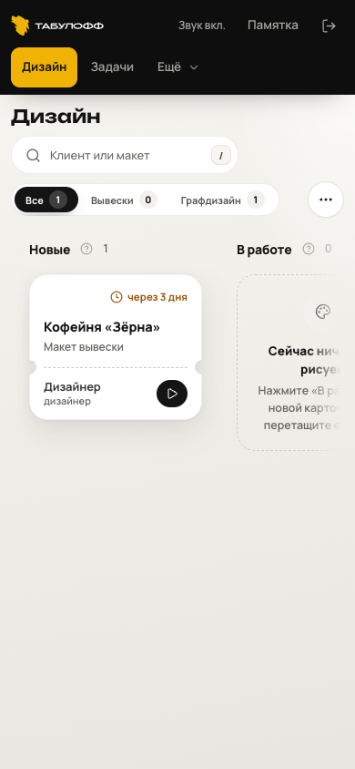
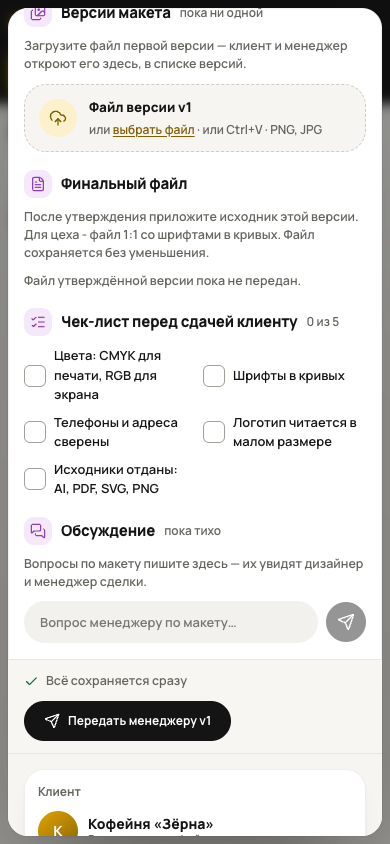
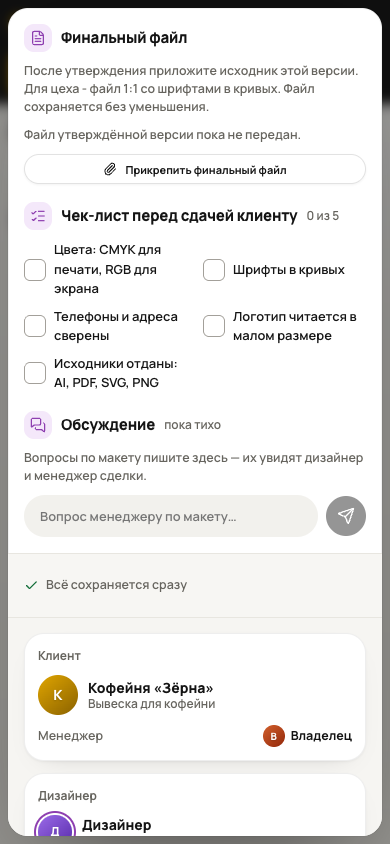

Ваша задача - на экране
Памятка дизайнеру. От первого макета до финального файла.
Тестовый вход. Открыть CRM
Откройте «Дизайн»
Здесь макеты, назначенные вам. Учебный пример - вывеска для кофейни.
Откройте карточку
Нажмите на заказ «Кофейня „Зёрна“». Прочитайте техническое задание и срок.
Взять в работу
Нажмите кнопку внизу карточки макета. Задача перейдёт в «В работе».
Владелец увидит, что вы начали работу.
Список пустой?
Владелец должен назначить вам макет. В тесте переключайте роли в одном браузере - на другом устройстве база отдельная.

12Покажите первый вариант
Сначала загрузите превью. Затем передайте его на проверку.
Загрузите макет
Нажмите «Файл версии v1» и выберите PNG или JPG с превью.
Передать менеджеру v1
Кнопка находится ниже, под обсуждением. В этом тесте макет проверяет владелец.
Макет перейдёт на согласование. Отправку клиенту отметит владелец.
Вернули на правки?
Вопрос по заданию? Напишите в «Обсуждении» внутри макета - переписка останется рядом с работой.

12Согласовали? Передайте исходник
Превью показывает идею. Финальный файл нужен для изготовления.
Прикрепите финальный файл
Кнопка появится после утверждения. Загрузите исходник именно согласованной версии.
Проверьте чек-лист
Отметьте выполненные пункты: цвета, шрифты, контакты, логотип и исходники.
Финальный файл сохранён в заказе. Его можно передать в производство.
Кнопки ещё нет?
Владелец пока не отметил согласование клиента. Самостоятельно менять решение клиента не нужно.
Другие поручения
Откройте «Задачи», прочитайте описание и срок. После выполнения отметьте поручение завершённым.

12CRM всегда под рукой
Добавьте значок на телефон. Открывать CRM станет проще.
iPhone
Откройте ссылку CRM в Safari.
«Поделиться» иногда находится внутри меню Safari. Если есть «Открывать как веб-приложение», включите.
Android
Откройте ссылку CRM в Chrome.
В некоторых версиях пункт называется «Установить приложение».
Схема действий. Вид меню зависит от версии телефона. Добавляйте саму CRM, а не памятку.

Наведите камеру
или нажмите сюда
На время теста
Один браузер - одна база. Чтобы проверить обе роли, выйдите и войдите с другим логином в том же браузере.
Между устройствами данные пока не передаются. Не очищайте данные сайта и не используйте приватный режим.
Лучше добавить значок до первого заказа. Для загрузки нужен интернет. Используйте учебные данные.
Что-то не получилось?
Пришлите нам скриншот и одну фразу: «Нажала …, ожидала …, получилось …».
Если нужного пункта нет: инструкция Apple · инструкция Google